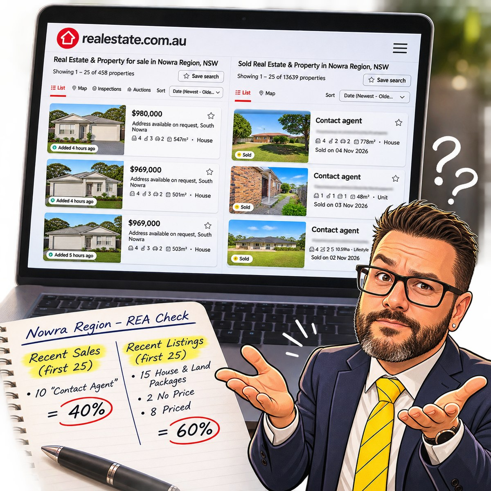

Of the first 25 recent sales I looked at on realestate.com.au, 10 showed “Contact agent” instead of a sold price. On the buy side, 15 of the first 25 new listings were house and land packages. Another two showed no price, and eight displayed a price.
That’s 40% of the sold results without a displayed price and 60% of the new listings taken up by packages in that first-page snapshot. Here’s what that means when you’re trying to compare properties.

What did it actually sell for?
When I’m looking at comparable sales, I want to see what someone actually paid. The result means more when you can put it alongside the home’s condition, land size, location and features. Buyers do the same thing when deciding what to offer, and homeowners do it when a place down the road sells.
Seeing “Contact agent” on 10 of the first 25 results means more legwork to get that picture. Where I’m able to share a result, I’d rather people have the information they need to make a better-informed decision.
Can I see the established homes first?
House and land packages have a place. If you’re looking to build, they’re exactly what you want to see. If you’re looking for an established home you can move into, seeing 15 packages on the first page means more listings to work through before you find something you can compare.
I’d like to see property portals make that choice clearer from the start. Give buyers an easy way to see established homes or house and land packages, and show sold prices wherever they can be shared.
What are you seeing?
If you’ve been searching around Nowra, how easy has it been to find actual sold prices or get straight to the type of home you want?
Source and scope. My check on 6 November 2026 covered the first 25 recent sales and first 25 new listings shown for the Nowra region on realestate.com.au. The figures describe the results I saw that day.